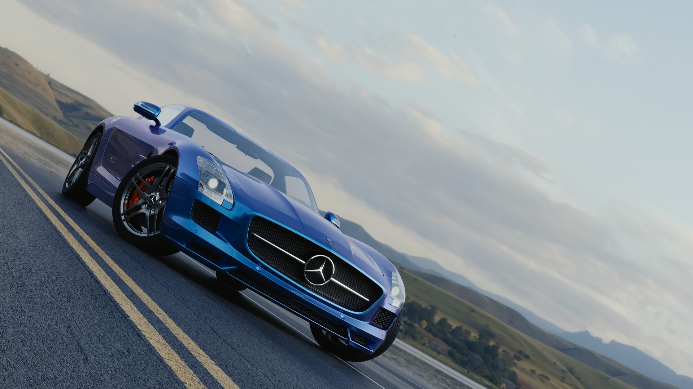
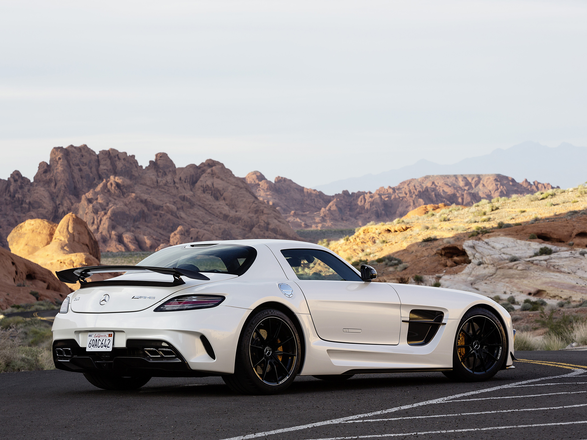

Mercedes Benz SLS AMG
The Mercedes Benz SLS AMG is a modern homage to the iconic 1950s 300 SL Gullwing.

Design
Gullwing Doors: The defining feature of the Coupe variant, which pivot upward from the roof.
For safety, the doors feature integrated explosive bolts that separate them from the chassis within 10 to 15 milliseconds if a rollover is detected
Spaceframe Chassis: Built on an innovative, lightweight aluminium spaceframe chassis weighing just 241 kg
Weight Balance: By placing the massive engine entirely behind the front axle (front-mid layout) and the transmission at the rear axle (transaxle design),
the SLS achieves a highly optimized 47:53 front-to-rear weight distribution.

This is a back view of the 2014-Mercedes-Benz-SLS-AMG-